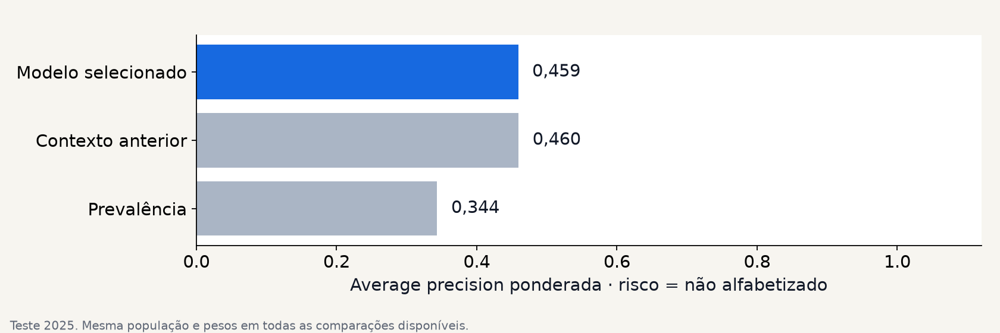
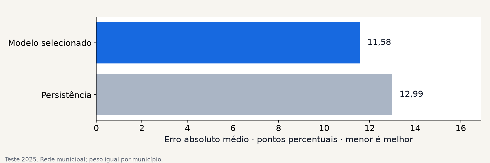

FIAP · Tech Challenge · Fase 3
01 / 10Alfabetização no Brasil: contexto e metas
Dados oficiais, validação temporal e contexto territorial para apoiar decisões educacionais.
Uma análise de risco por aluno e de metas por município.
Risco = não alfabetizado. Predição contextual; não é diagnóstico individual.
01 · Problema educacional
02 / 10Dados e perguntas da análise
Quais contextos concentram risco e quais municípios merecem análise prioritária?
Fontes: INEP AEEB 2023–2025; metas oficiais; INSE 2021; IBGE Censo 2022.
02 · Validação
03 / 10Treino em 2024, teste em 2025
O teste não escolhe o modelo, os atributos ou o limiar.
Backtest retrospectivo com as versões disponíveis das fontes; sua disponibilidade nas datas históricas não foi verificada.
03 · Contexto e interpretação
04 / 10Atributos usados na previsão
- Histórico municipal do ano anterior.
- Rede, território e contexto socioeconômico.
- População e densidade demográfica.
Alunos com os mesmos atributos podem receber o mesmo risco.
Maior importância nesta execução: Média de português no ano anterior, Alfabetização no ano anterior, Unidade da Federação.
Proficiência individual, respostas e resultados contemporâneos ficam fora dos atributos preditivos.
04 · Resultado da classificação
05 / 10Classificação: comparação com o baseline

AP semelhante ao baseline contextual; não houve ganho demonstrado. Modelo: 0,4591; baseline: 0,4596. Diferença observada: -0,000483; IC 95%: [-0,002943; 0,001808].
Modelo selecionado na validação: random_forest. Maior average precision é melhor.
05 · Risco e capacidade de atendimento
06 / 10Recall, precisão e seletividade
O limiar F2 sinaliza 93,56% dos registros (contagem sem pesos). A baixa seletividade exige avaliar a capacidade de atendimento.
Recall e precisão ponderados descrevem erros diferentes; o limiar F2 não demonstra benefício de uma intervenção.
Teste 2025; métricas ponderadas. A regra de limiar foi fixada antes de avaliar o teste.
06 · Modelo municipal
07 / 10Previsão das taxas municipais

Modelo municipal: hist_gradient_boosting. O erro é medido em pontos percentuais, com o mesmo peso para cada município.
Rede municipal; uma linha por município e ano. Probabilidade individual não é taxa municipal prevista.
07 · Projeção municipal
08 / 10Municípios com maior déficit projetado
| Código IBGE | UF | Projeção 2026 | Meta | Diferença |
|---|---|---|---|---|
| 4319604 | RS | 44,3% | >= 80,0% | -35,7 p.p. |
| 4304507 | RS | 45,5% | >= 79,8% | -34,3 p.p. |
| 4304408 | RS | 48,2% | >= 79,2% | -31,1 p.p. |
| 4314209 | RS | 42,7% | >= 73,4% | -30,7 p.p. |
| 4317707 | RS | 45,9% | >= 76,4% | -30,5 p.p. |
A diferença entre projeção e meta organiza os municípios para investigação e conferência local.
Projeção 2026 após reajuste. As métricas de teste 2025 pertencem ao modelo avaliado, preservado separadamente.
08 · Padrões descritivos
09 / 10Perfis territoriais semelhantes
| Cluster | Região | Municípios |
|---|---|---|
| 2 | Nordeste | 1445 |
| 1 | Sudeste | 909 |
| 1 | Sul | 778 |
| 0 | Sudeste | 531 |
| 2 | Norte | 342 |
Composição descritiva: 19 pares cluster/região; até cinco maiores acima. Perfis e UF completos no suplemento.
cluster 0: taxa observada 64,5%; cluster 1: taxa observada 81,9%. Associação descritiva, sem inferência causal.
Clusterização descritiva após congelar a avaliação. Semelhança não demonstra efeito causal.
09 · Valor estratégico
10 / 10Metas de 2027–2030 sob taxa constante
| Ano | Atingem | Não atingem | Sem meta | Sem projeção |
|---|---|---|---|---|
| 2027 | 3016 | 2319 | 165 | 0 |
| 2028 | 2615 | 2720 | 165 | 0 |
| 2029 | 2191 | 3144 | 165 | 0 |
| 2030 | 1749 | 3586 | 165 | 0 |
Hipótese: manter a taxa prevista de 2026. Sem novo treino nem garantia futura; usar para investigar distância às metas.
2027–2030: cenários explícitos frente às metas, sem garantia de desempenho futuro. Risco = não alfabetizado. Predição contextual; não é diagnóstico individual.